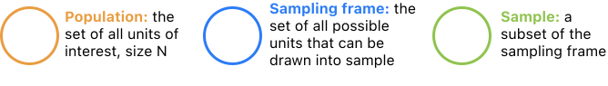
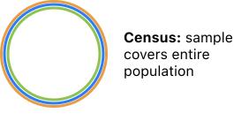
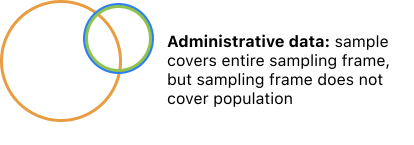
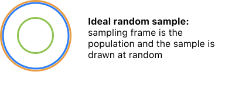
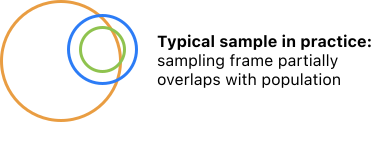

2.2. Data Sampling¶
In our description of Gallup’s polling fiasco in 1948, we used the term “bias” to say why the poll results were wrong. In this section, we’ll define bias with a bit more rigor using the concept of sampling frames. Later in the book, we’ll define bias in a precise statistical sense using random variables and expectation. Before starting to work with equations, though, it’s important to develop intuition for why bias arises.
Statistical bias is the difference between your estimate and the truth. The Gallup’s 1948 poll predicted that Dewey would receive 50% of the popular vote, but in reality Dewey received 45%. This estimate had a bias of 5%.
As the Gallup poll shows, bias commonly occurs because the sample differs from the population. In data analysis, our population is the set of all units of interest. The “of interest” part is important. For an election poll, the population is not every person in the US, or even every registered voter in the US – it is every person who will actually cast a vote. This difference can be dramatic: in 2020, there were around 330 million people in the US and 240 million registered voters, but 158 million people cast votes.
Our sampling frame describes all the possible units that can be drawn into the sample. Our sample is a subset of our sampling frame. It’s important to distinguish between the sampling frame and sample. Before we actually collect any data, we choose a sampling frame when we decide how we collect data. For instance, an election poll conducted only through via landline phone calls has a sampling frame of people with landlines. This sampling frame misses people from the population who don’t have landlines. It also includes people not in the population, like people with landlines but aren’t registered to vote. Even if the poll manages to receive responses from every single person with a landline, their result will still be biased because of the sampling frame.
2.2.1. Common Sampling Scenarios¶
Let’s examine the population, sampling frame, and sample for common sampling scenarios. We’ll use an orange oval to depict the population, blue for the sampling frame, and green for the sample:
2.2.1.1. Scenario 1: Census¶
In a perfect census, the sampling frame and sample capture the entire population. For instance, if our population is the names of all students currently enrolled in Data 100, the official course roster is a census. A perfect census is relatively rare, however. Even well-funded, large-scale efforts like the US Census cannot practically capture every single person in the US simply because some people won’t fill out the form.
2.2.1.2. Scenario 2: Administrative data¶
In this book, administrative data refers to a nonrandom sample that was not collected specifically for research purposes. With administrative data, the sample covers the entire sampling frame, but the sampling frame is not the entire population. For example, the US government keeps track of every tax return. However, if we aim to find the median income for households in the United States, this data is not a census since the IRS does not require a tax return for households with incomes beneath a threshold (at the time of this writing, roughly $20,000).
Administrative datasets are often large since they come from large companies, websites, or governments. But, these data present challenges for analysis because they may not be representative of the population. For instance, a 2010 study collected 100,000 political tweets from Twitter from the month prior to the German national election. The study found that the proportion of tweets about a party closely followed the proportion of votes that party received in the election 1. From this finding, one might infer that collecting tweets (which is cheap) could replace doing political opinion surveys (which is expensive) for predicting votes.
In this scenario, the sample of tweets covers the entire sampling frame: political tweets during the month prior to the election. But, the sampling frame does not represent the population very well – Twitter users are not representative of a voting population as a whole. And in this case, a follow-up study pointed out that the 2010 analysis left out the Pirate Party, a small party that opposed regulation of the Internet. In fact, the Pirate Party received more mentions on Twitter than any other political party but received few votes in the election. When the Pirate Party is included in the 2010 analysis, Twitter mentions are a poor predictor of votes 2.
You should not assume that administrative data are representative of your population unless you have a good reason. Still, adminstrative data are highly useful in some situations. They are often cheaper and more available than collecting data yourself as governments adopt open-data policies. And we have already seen an application of administrative data. Remember John Snow’s natural experiment from Data 8 3? He compared two companies that provided water to some houses in London: Southwark & Vauxhall (S&V) and Lambeth. S&V drew water from a pipe tainted with sewage, while Lambeth didn’t. John Snow found that there was no systematic difference between people that used S&V and Lambeth, yet people who used S&V were ten times more likely to die from cholera. This sample was not representative of people in London because it only included people served by two water companies. But, it still provided strong evidence that sewage water spreads cholera, because John Snow made a within-sample comparison that suggested a mechanism that applied to other groups outside the sample.
In general, administrative data is best used to make within-sample comparisons. To generalize from a sample to a population, we rely on probability sampling.
2.2.1.3. Scenario 3: Ideal random sample¶
In an ideal scenario, the sampling frame exactly covers the population and the sample is drawn at random from the sampling frame. If these conditions are met, then we can generalize from our sample to the population in a precise way – we can find the exact probability that the sample is not representative of the population. You’ve performed statistical inference using p-values and confidence intervals. Those tools assume that we have an ideal random sample. However, a truly ideal random sample is rare in practice.
2.2.1.4. Scenario 4: Typical sample in practice¶
Collecting data is a messy process. People leave questions blank on surveys, or don’t respond at all. Sensors go uncalibrated and record inaccurate measurements. In an ideal world, the sampling frame is exactly the population. In reality, the sampling frame only partially overlaps with the population. The job of the data scientist is to determine the extent of this mismatch and its effect on the analysis. An imperfect sample does not always mean that the data are useless. Instead, we state our assumptions explicitly, find out which assumptions are most likely to be violated, and adjust the confidence we place in our findings.
Let’s return to bias. In this section we break down the data collection process into population, sampling frame, and sample. Choosing an improper sampling frame biases the rest of the analysis. Fancy math doesn’t help here – the sampling frame is a human decision. When the Literary Digest decided to poll people using phone and car registrations, and when John Snow decided to look at S&V and Lambeth, they chose a sampling frame. For data scientists, the first question in an analysis is often: “What’s the sampling frame?”
Next, we examine the sample itself. As the Gallup Poll example shows, even when the sampling frame is right, drawing a sample from the sampling frame can introduce bias. To reduce bias, we use probability sampling. Probability sampling has a key advantage over nonrandom sampling methods: we can actually find mathematically how much bias is introduced in the sampling process. Now, probability sampling is not a cure-all. It can’t help with bias in the sampling frame. Issues like nonresponse can introduce bias too. Still, probability samples are important because they give us more confidence in generalizing from data.
- 1
Tumasjan, Andranik, Timm Sprenger, Philipp Sandner, and Isabell Welpe. “Predicting Elections with Twitter: What 140 Characters Reveal about Political Sentiment.” In Proceedings of the International AAAI Conference on Web and Social Media, Vol. 4, 2010.
- 2
Jungherr, Andreas, Pascal Jürgens, and Harald Schoen. “Why the Pirate Party Won the German Election of 2009 or the Trouble with Predictions: A Response to Tumasjan, a., Sprenger, to, Sander, Pg, & Welpe, Im ‘Predicting Elections with Twitter: What 140 Characters Reveal about Political Sentiment.’” Social Science Computer Review 30, no. 2 (2012): 229–34.
- 3
https://www.inferentialthinking.com/chapters/02/2/snow-s-grand-experiment.html